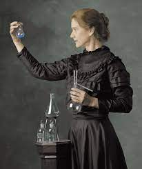
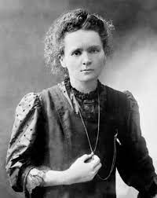

Marie Skłodowska Curie
Una delle più famose scienziate della storia
Nasce a Varsavia nel 1867 dove vive fino all’età di 24 anni quando, per ovviare al fatto che in Polonia le donne non potevano accedere all’università, si trasferisce a Parigi per studiare alla Sorbona, dove si laurea in fisica e in chimica e dove incontra il fisico Pierre Curie, suo futuro marito.Sulla scia di Bequerel, che ipotizzava che le sue lastre fotografiche fossero rimaste impressionate a causa del radio contenuto nel solfato, la Curie inizia a misurare le radiazioni emesse dall’uranio. È la stessa Curie a proporre il termine radioattività per indicare la capacità di produrre radiazioni. Scopre il medesimo fenomeno anche nel torio e durante le sue ricerche scopre prima il polonio, così denominato in onore del suo paese natale, e poi il radio, così chiamato per la sua alta radioattività. Nel 1903 riceve il nobel per la fisica insieme al marito Pierre Curie, con il quale condividerà sempre l’attività di ricerca, ed a Anodine Henri Becquerel «in riconoscimento dei servizi straordinari che essi hanno reso nella loro ricerca congiunta sui fenomeni radioattivi scoperti dal professor Henri Becquerel.». É la prima persona a condividere un premio nobel e a vincere due premi nobel in due discipline; infatti nel 1911 riceve il secondo Nobel per la chimica «in riconoscimento dei suoi servizi all'avanzamento della chimica tramite la scoperta del radio e del polonio, dall'isolamento del radio e dallo studio della natura e dei componenti di questo notevole elemento.» La Curie intenzionalmente non ha mai depositato il brevetto per l’isolamento del radio affinché la comunità scientifica fosse libera sviluppare altri filoni di ricerca. Pierre Curie ricopriva la cattedra di fisica, dopo la sua morte, avvenuta nel 1906, la cattedra viene assegnata a Marie Curie: è la prima donna ad insegnare alla Sorbona. Nel 1914, allo scoppio della prima guerra mondiale, sospende l'insegnamento e le ricerche di laboratorio, e organizza un servizio radiologico mobile (le “petites Curies”) per l'esercito. Nel dopoguerra si reca negli Stati Uniti, dove è accolta trionfalmente, per raccogliere fondi per la ricerca sul radio.Muore nel 1934 di leucemia: probabilmente la causa è da ricercasi nella prolungata esposizione alle radiazioni senza alcuna precauzione; ancora oggi, chiunque si rechi alla Biblioteca Nazionale di Parigi per consultare i diari dei Curie, deve sottoscrivere un certificato che liberi la biblioteca da ogni responsabilità per eventuali danni alla salute. Per iniziativa di François Mitterrand, nel 1995 le spoglie di Maria Sklodowska-Curie sono trasferite sotto la cupola del Pantheon di Parigi per i suoi meriti, è la prima donna a ricevere tale onore.
Marie Curie era una fisica francese nata a Varsavia, in Polonia. È diventata famosa per aver contribuito alla scoperta di due elementi radioattivi, il polonio e il radio, e per il suo lavoro sulla radioattività. Curie ha vinto due premi Nobel ed è l'unica donna nella storia ad aver vinto il premio in due campi diversi - Fisica (1903) e Chimica (1911).
Primi anni
Marie Curie è nata Maria Salomea Sklodowski il 7 novembre 1867 a Varsavia, in Polonia. Entrambi i suoi genitori erano insegnanti e davano importanza a ricevere un'educazione di qualità, ma le donne nella sua città non potevano studiare per ottenere una laurea universitaria. Maria era determinata a diventare una scienziata e ha risparmiato abbastanza denaro per trasferirsi a Parigi, in Francia, e studiare fisica all'Università della Sorbona. Nel 1906, Curie è diventata la prima donna a insegnare presso la famosa università francese.
Una storia d'amore
Dopo i suoi studi, ha iniziato a lavorare con uno scienziato francese chiamato Pierre Curie e si sono sposati nel 1895. Insieme hanno scoperto due nuovi elementi: il polonio (nome dato in onore della sua terra natia, la Polonia) e il radio, che sono radioattivi e emettono raggi di energia. Hanno avuto due figlie. Irène ha continuato il lavoro di sua madre mentre Ève ha scritto una biografia sulla vita di sua madre. La loro storia d'amore è finita quando Pierre è morto nel 1906.
Carriera
La scoperta di Curie del polonio e del radio è stata importante perché i raggi invisibili potevano attraversare la materia solida e condurre l'elettricità e la sua comprensione della radioattività avrebbe aiutato a salvare vite. Durante la prima guerra mondiale, Curie ha creato unità a raggi X che potevano essere portate negli ospedali da campo in Francia e che hanno permesso ai medici di vedere ossa rotte e proiettili all'interno dei corpi dei soldati feriti.
Morte e eredità
Sfortunatamente, Marie non sapeva di lavorare con materiali pericolosi che avrebbero potuto farle male. È morta il 4 luglio 1934, per sovraesposizione alla radiazione a causa dei suoi esperimenti e del lavoro con le macchine a raggi X. Il suo lavoro ha contribuito enormemente ai campi della scienza e della medicina. Rimane una grande fonte di ispirazione e ha dimostrato che le donne possono studiare e diventare importanti.
In inglese
Marie Curie was a French physicist born in Warsaw, Poland. She was famous for helping to discover two radioactive elements, polonium and radium, and for her work on radioactivity. Curie won two Nobel prizes and is the only woman in history to have won the Prize in two different fields - Physics (1903) and Chemistry (1911).
Early life
Marie Curie was born Maria Salomea Sklodowski 7th November 1867 in Warsaw. Poland. Both her parents were teachers and gave importance to receiving a good education, but women in her city could not study to get a university degree. Maria was determined to become a scientist and saved enough money to move to Paris, France and study physics at the university of the Sorbonne. In 1906, Curie became the first woman to teach at the famous French university
A Love Story
After her studies, she started to work with a French scientist called Pierre Curie and they got married in 1895. Together they discovered two new elements: polonium (named after her home country of Poland) and radium, which are radioactive and give off rays of energy. They had two daughters. Irène went on to continue her mother’s work while Ève wrote a biography about her mother’s life. Their love story ended when Pierre died in 1906.
Career
Curie’s discovery of polonium and radium were important because the invisible rays could pass through solid matter and conduct electricity and her understanding of radioactivity would help save lives. During the first World War, Curie created x-ray units that could be taken to battlefield hospitals in France and these allowed doctors to see broken bones and bullets inside the bodies of wounded and hurt soldiers.
Death and legacy
Unfortunately, Marie did not know that she was working with dangerous materials that could make her ill. She died 4th July, 1934, from overexposure to radiation because of her experiments and work with x-ray machines. Her work has contributed greatly to the fields of science and medicine. She remains a great inspiration and has demonstrated that women can study and become important.
Image Gallery

